Editorial / Commercial
BALM Studio
Modeled for BALM Studio's NYC rebrand with a transportation theme and city-based visual direction.
Modeling
Model Digitals


Runway Highlight
Modeled for 1127 during New York Fashion Week through The Model Experience fashion show.
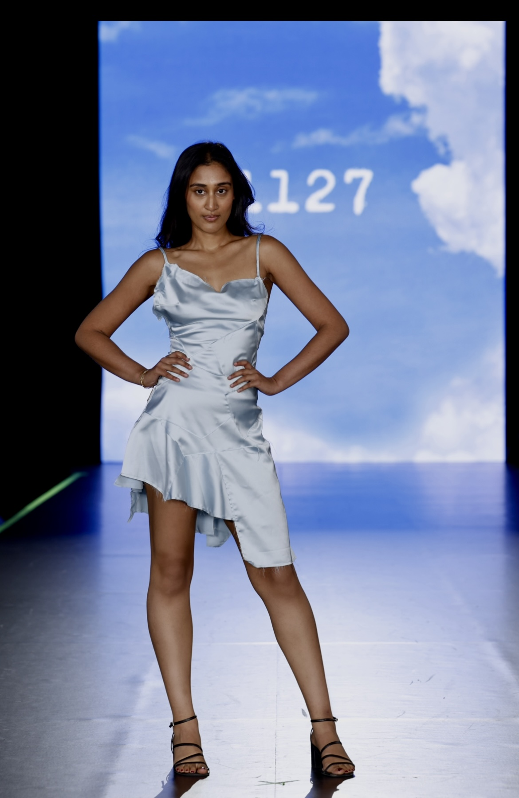
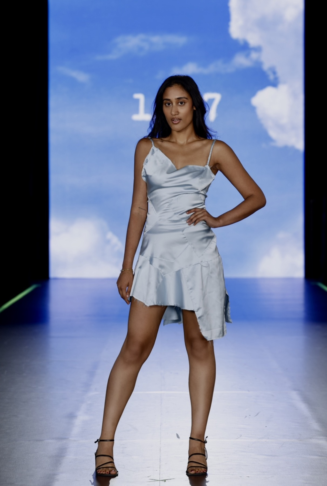
Editorial Shoot
Modeled for an editorial photoshoot with photographer AnneMarie around Bryant Park and Times Square, bringing a city-forward fashion look into reflective street and nighttime settings.
@the_imageamb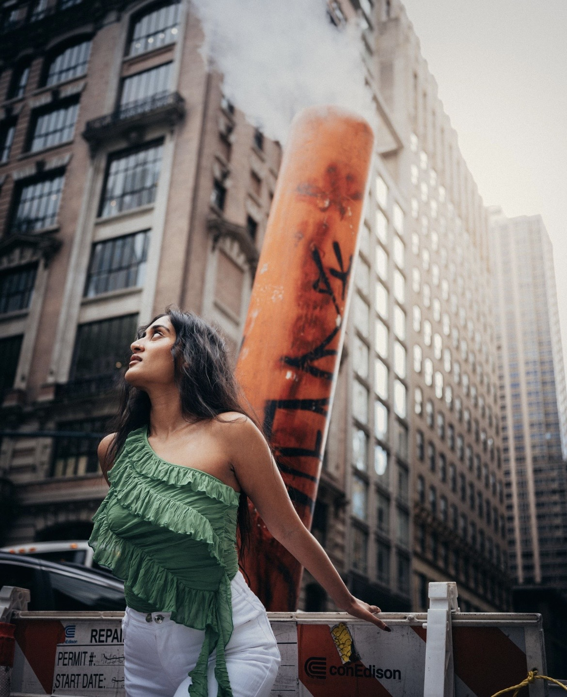
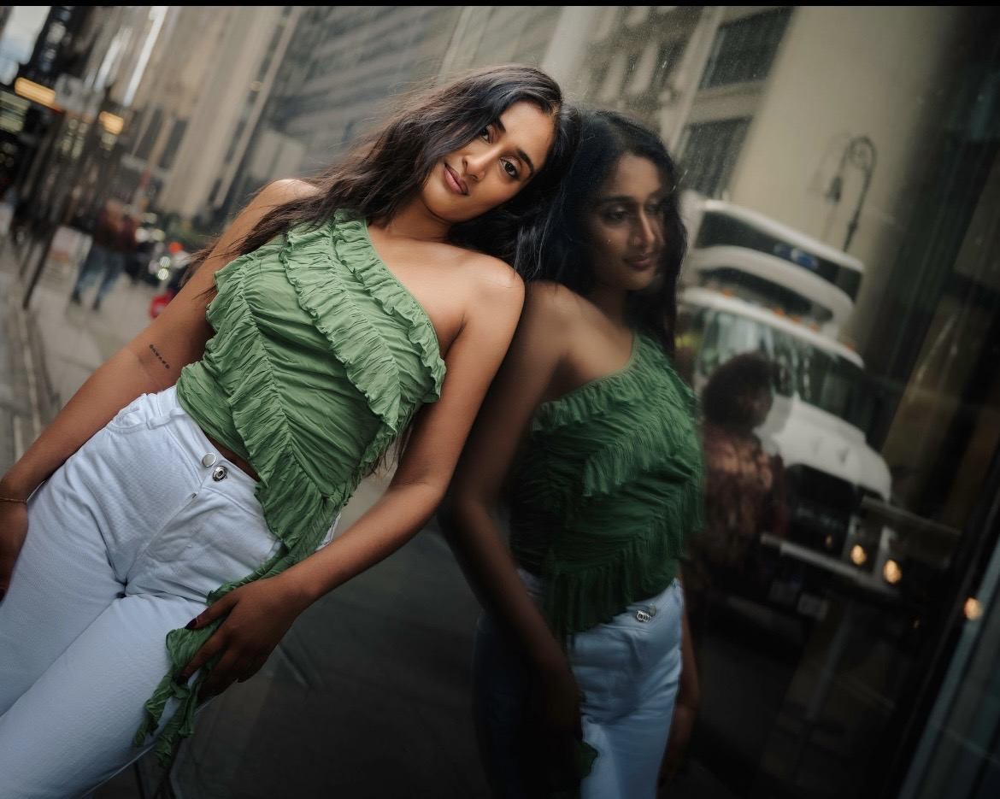
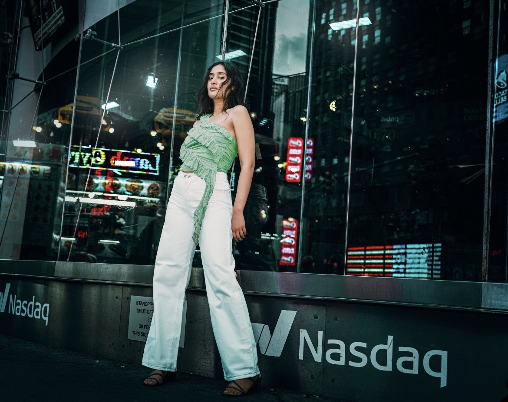
Editorial Shoot
Modeled for a January 2026 editorial photoshoot with photographer Terrance Yale, exploring dramatic blue light, shadow, and expressive portrait work.
@terranceyale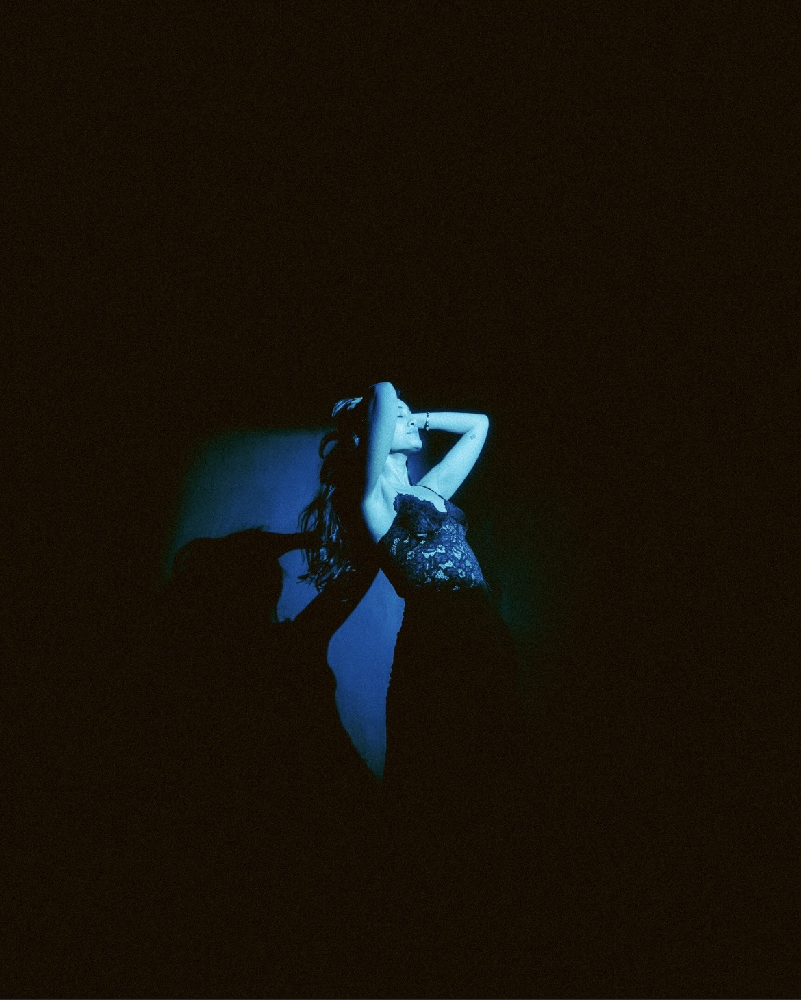
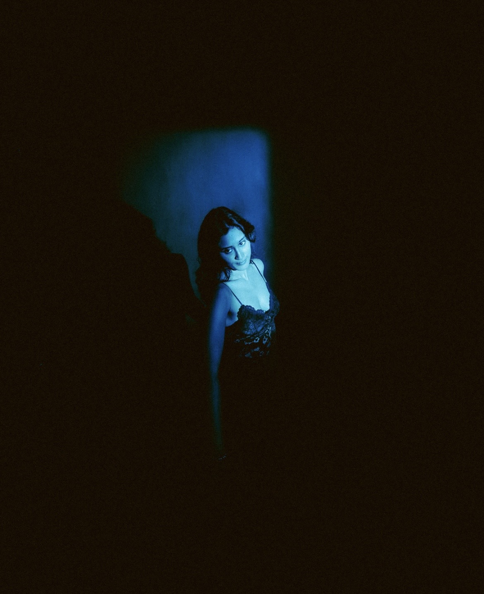
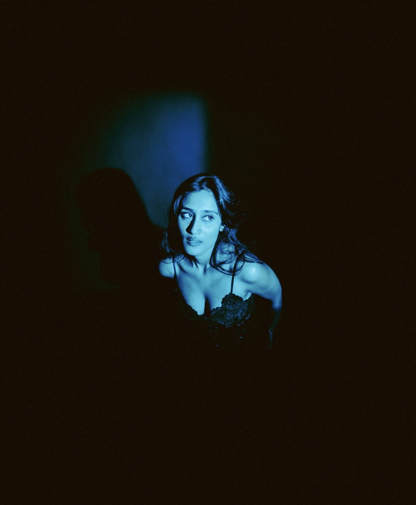
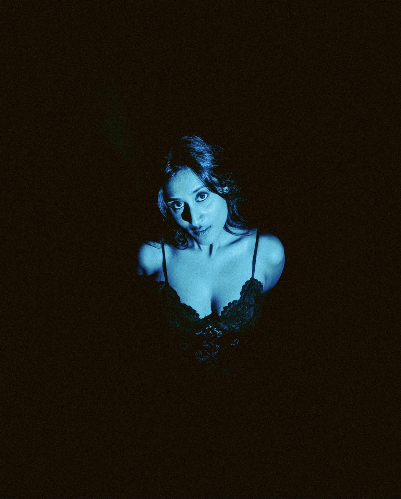
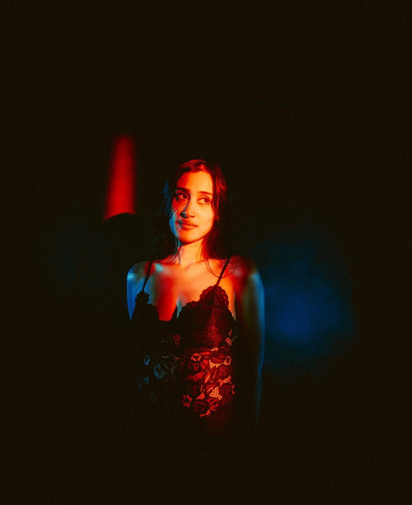
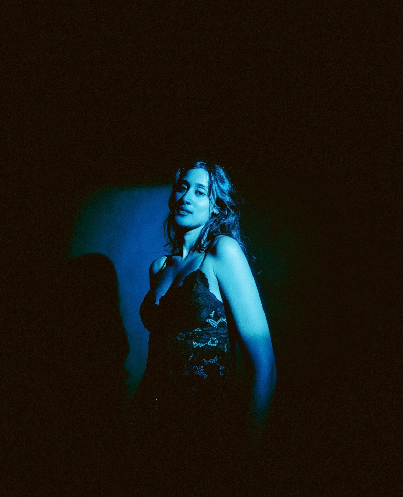
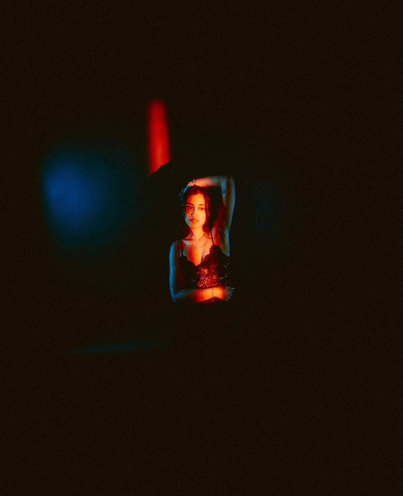
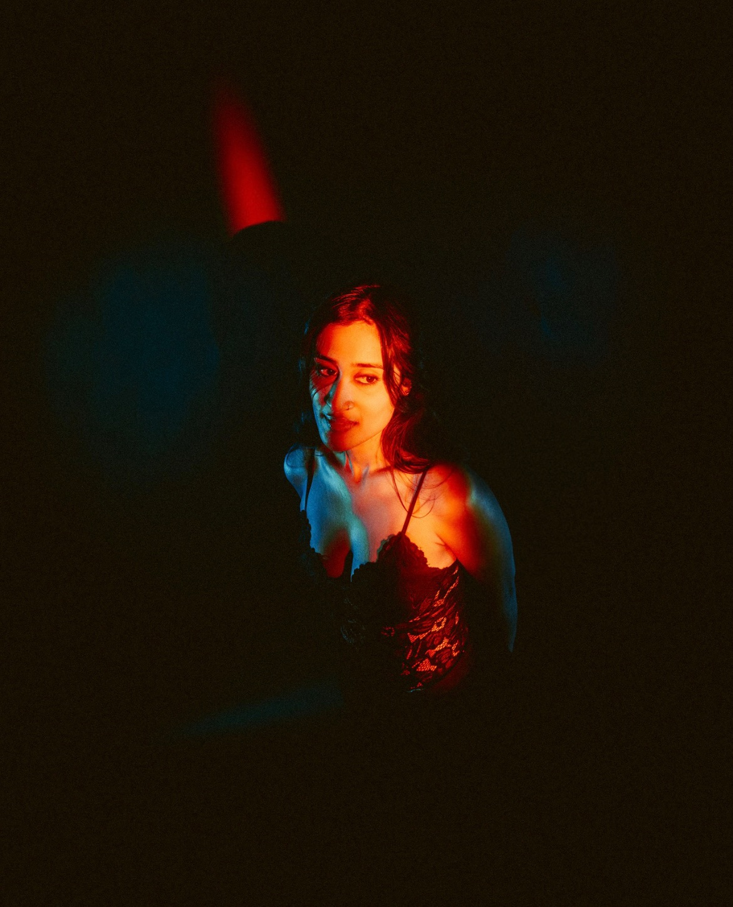
Editorial / Commercial
Editorial / Commercial
Modeled for BALM Studio's NYC rebrand with a transportation theme and city-based visual direction.